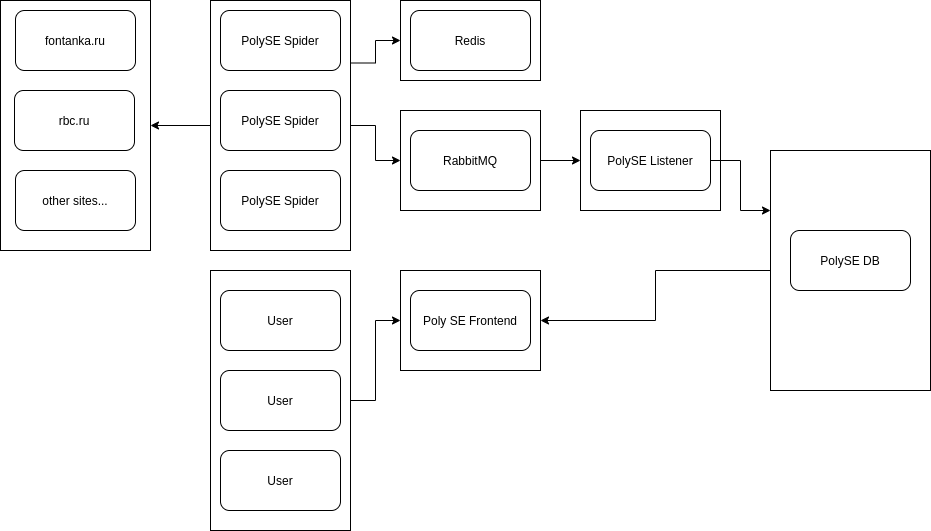

Целью проекта являлось написание сервиса для поиска релевантых сайтов и статей по поисковым словам.
В некоторм роде идеей нашего проекта было написать
Наш проект длился почти два месяца. За это время мы:
Разработали поисковую базу данных, поддерживающую вставку, фильтрацию и поиск сайтов по релевантным словам
Разработали поискового паука, который умеет обходить заданные страницы в интернете и доставать из них только полезное содержимое
Разработали пользовательский интерфейс для нашего сервиса
но надеемся доделать
Диаграмма проекта
